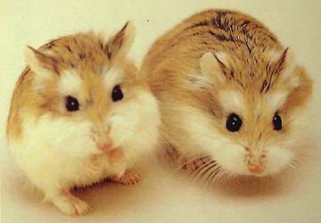

小倉鼠的家
介紹可愛倉鼠的日常生活～
關於本站
歡迎光臨本站。
這裡會介紹倉鼠詳細資料的網站，會有很多的倉鼠照片。
※未經許可，請勿擅自複製轉載。
倉鼠的品種
✿羅伯羅夫斯基倉鼠(老公公鼠)
倉鼠中體型最小的，速度快、較膽小，不易與主人親近。
小毛足鼠（學名：Phodopus roborovskii），又名沙漠侏儒倉鼠或羅伯羅夫斯基倉鼠，俗稱老公公鼠，為倉鼠科毛足鼠屬的動物。
加卡利亞倉鼠(楓葉鼠、趴趴鼠、三線鼠)
較為溫順、親人。
根據花色又分為: 三線野生色、銀狐、紫狐、布丁、金狐、奶茶。
自我介紹
- 暱稱 ：
- Guan-Rui Xu
- 職業 ：
- 美術工程師
- 生日 ：
- 1997年7月30日
- mail ：
- hsumihuang@gmail.main.jp
- Web ：
- https://github.com/hsumihuang